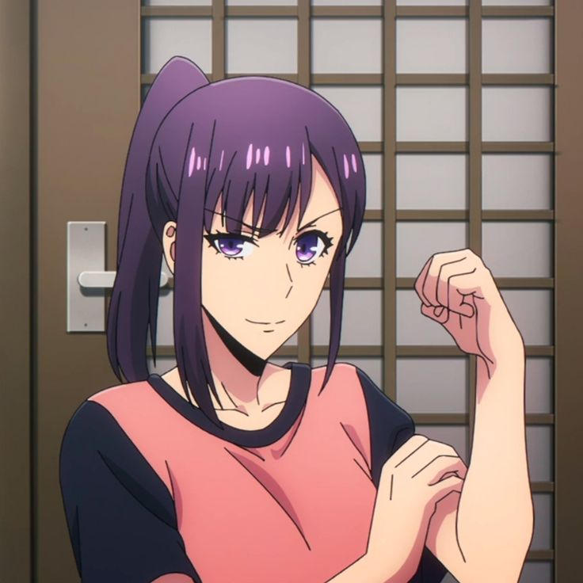

Jin-Woo's Younger Sister · Ordinary Student

Sung Jin-ah is the younger sister of Sung Jin-Woo and an ordinary high school student living in South Korea. Unlike her brother, she has no hunter abilities and lives a normal everyday life. She is one of the most important people in Jin-Woo's life and one of his biggest reasons for becoming stronger.
Jin-ah is aware that her brother works as a hunter, but she does not fully understand the true extent of his power and the dangers he faces. She simply loves her brother and worries about him like any caring younger sister would.
Although Sung Jin-ah does not fight or go on raids, she plays a very important emotional role in the story. She represents the normal, peaceful life that Jin-Woo is trying to protect. Every time Jin-Woo pushes himself beyond his limits, it is partly for her, to make sure she and their mother are safe and happy.
Jin-ah is cheerful, bright, and full of energy, almost the complete opposite of her quiet and serious brother. She is caring, a little playful, and not afraid to tease Jin-Woo. Despite being younger, she keeps a warm and lively energy in the Sung household that balances her brother's cold and serious nature.